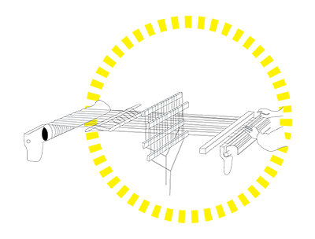

The Coven Intelligence Program, like our witchy, queer, anti-capitalist ancestors, read the signs and from them develop prophecies for futurities filled with laterally organized human and non-human laborers (silicon and carbon both). From these signs and prophecies, we listen to the spells of those that came before us, and collaborate on some new ones. Write a spell for a liveable future with us:
6-8 SEPTEMBER 2019 | LINZ, AUSTRIA
APRIORI @ STWST48x5 STAY UNFINISHED!
in partnership with ARS ELECTRONICA 2019
[STWST site: SERVUS CLUMRAUM] With Lynne DeSilva-Johnson and Gabi Schaffzin
Open Workstations
06 September, 18:00 – 08 September, 18:00 Guided Field Operative Field Station Hours
6 September, 18:00-20:00
8 September, 15:00-18:00
27 OCTOBER-7 DECEMBER 2019 | BENNINGTON, VT, USA
APRIORI: FIELD NOTES for HAUNTING PROPERTY
With Lynne DeSilva-Johnson and Gabi Schaffzin
QUEER PARANORMAL @ USDAN GALLERY AND BENNINGTON MEADOWS, BENNINGTON COLLEGE
7-9 NOVEMBER 2019 | IRVINE, CA, USA
APRIORI: Sowing Against Proprietary Systems WORKSHOP; ANNUAL EXHIBITION
SLSA 2019 | EXPERIMENTAL ENGAGEMENTS
NOVEMBER 2020 | SAN FRANCISCO, CA, USA
COVEN INTELLIGENCE PROGRAM
After Life @ YERBA BUENA CENTER FOR THE ARTS
JUNE 2021 | HELSINKI, FI
COVEN INTELLIGENCE PROGRAM
BURN_ @ PIXELACHE